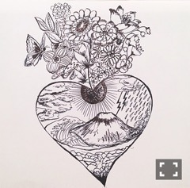
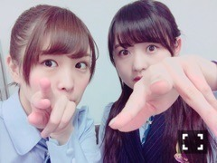
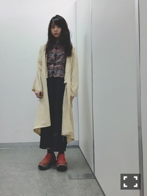
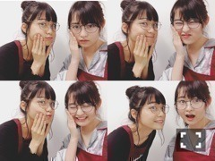

| 2016/04 19 Tue | ざらざら触感。708回目 |
熊本県をはじめ九州地方で起きた地震。
未だに余震が続いているようで
心配しています。
先日幕張メッセで行われた握手会会場で
急遽、募金箱を設置致しました。
ご協力してくださった会場のみなさん、
ありがとうございました。
これ以上被害が拡大しないよう
祈るばかりです。

幕張メッセ2days
ありがとうございました。
全国握手会のミニライブ
遥かなるブータン初披露しました。
滑らかな動きはやはり自分に合います。
踊りでいうならバレッタも楽しい！
振りが入ったことによって
曲が好きになりました。
ぜひ首の動き真似してください∠( 'ω')／
そして握手レーンは
かりんちゃんとペアでした！
かりん党の皆様
ありがとうございました！！！！
二期生オーディション前のエピソードに
みんなびっくりしてたね( ^ω^ )
実はかりんちゃんとはそういう関係なの。

王手！！
個別握手会

ガウンは同色で
刺繍が入ってるのが可愛いです。
メンズもので丈長かったの短くしました
ミシンをやっと使いこなせるようになった！

サテンのぱじゃま

店長、新人
当日、強風の中
たくさんの方に来ていただきました。
みなさん、大丈夫でしょうか。
セカンドアルバムの話だったり、
ツアーの話だったり、
お酒の話だったり、
髪染めた染めてないの話だったり、
個人PVの感想だったり、
花粉症の話だったり。
この二日間でみんなに
元気をもらいました！
気持ちが保てず、
うまくいかないことがたくさんあります。
仕事としてもそうですが、
今回起きた地震に対して
自分がグループの一人としても、
個人としても、少しでもできることを、
と思っています。
まりか
コメント(449)
2016/04/19 15:48